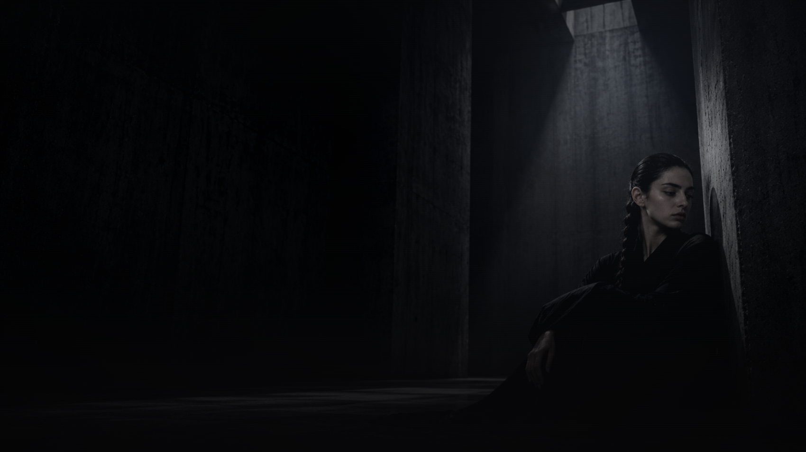
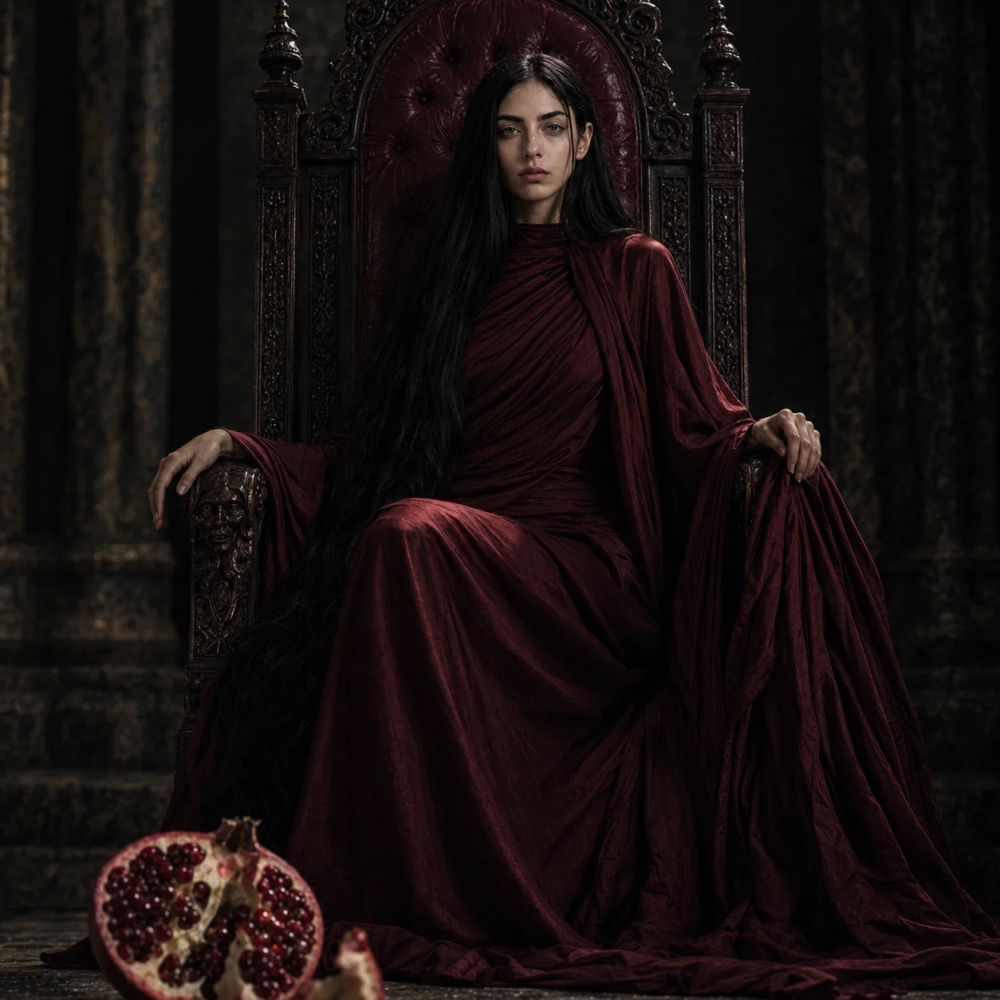
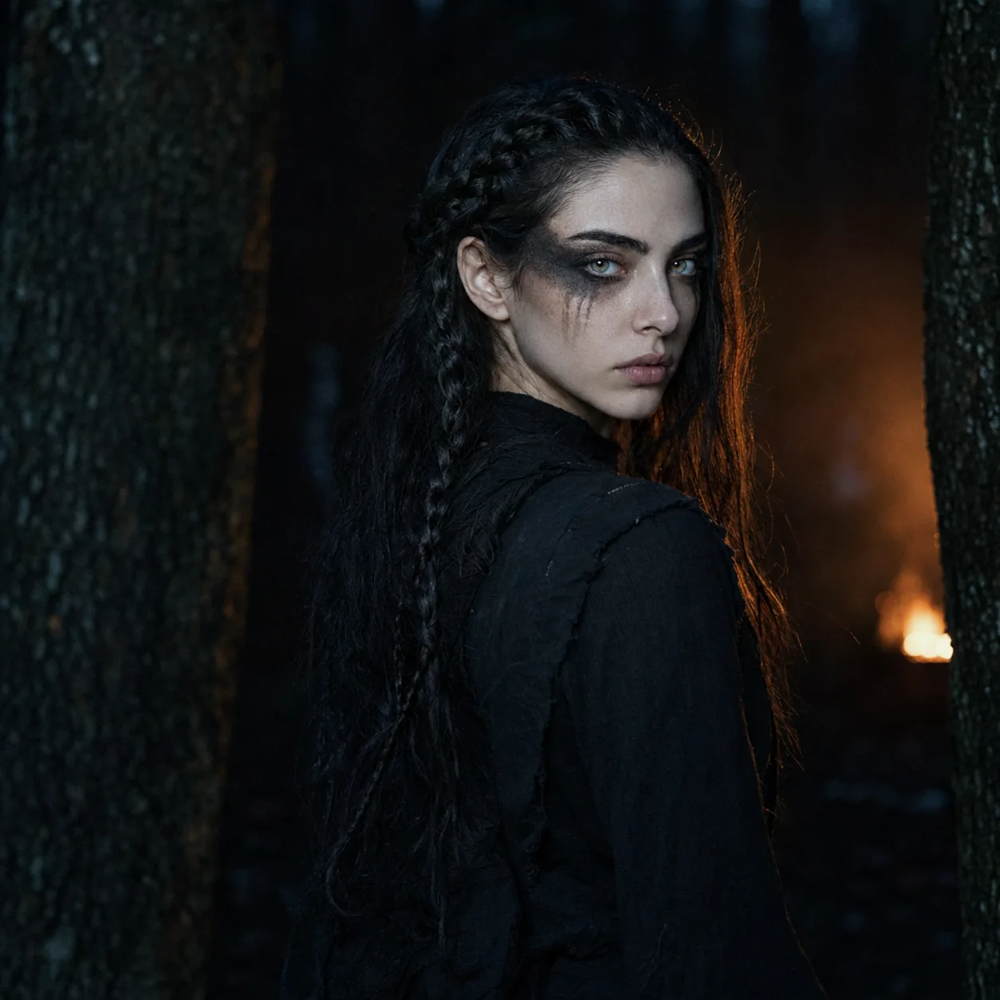
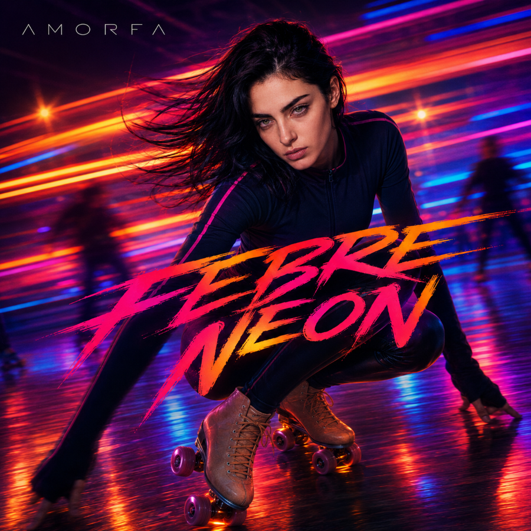
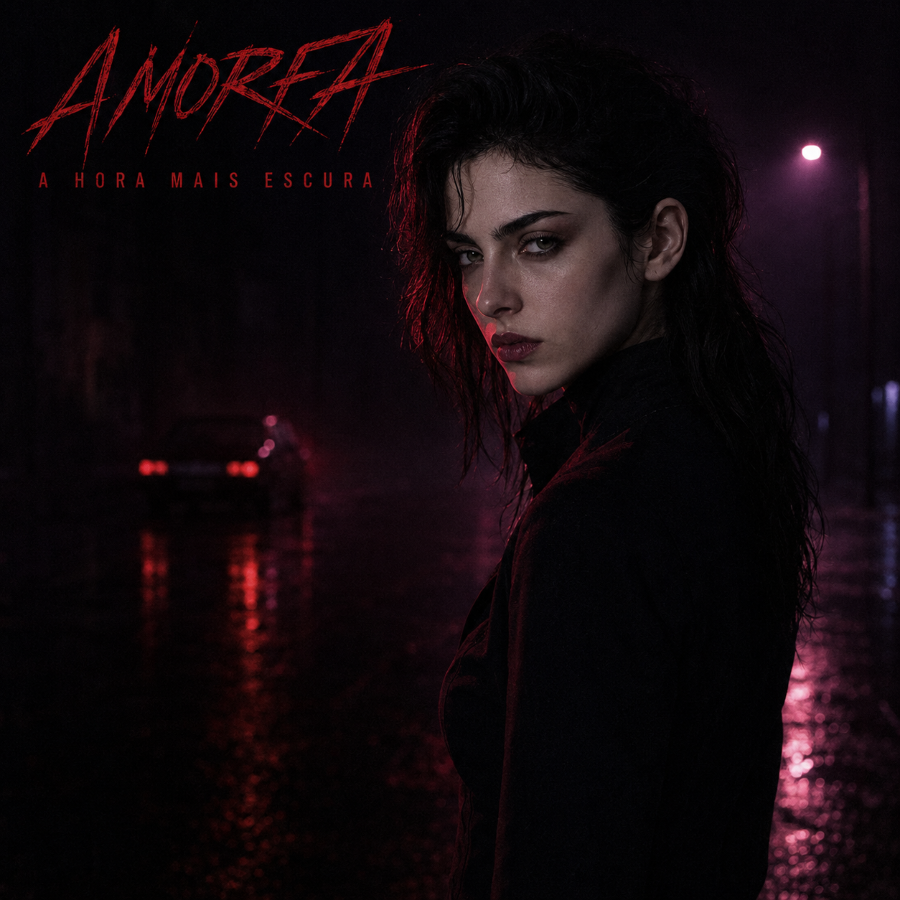
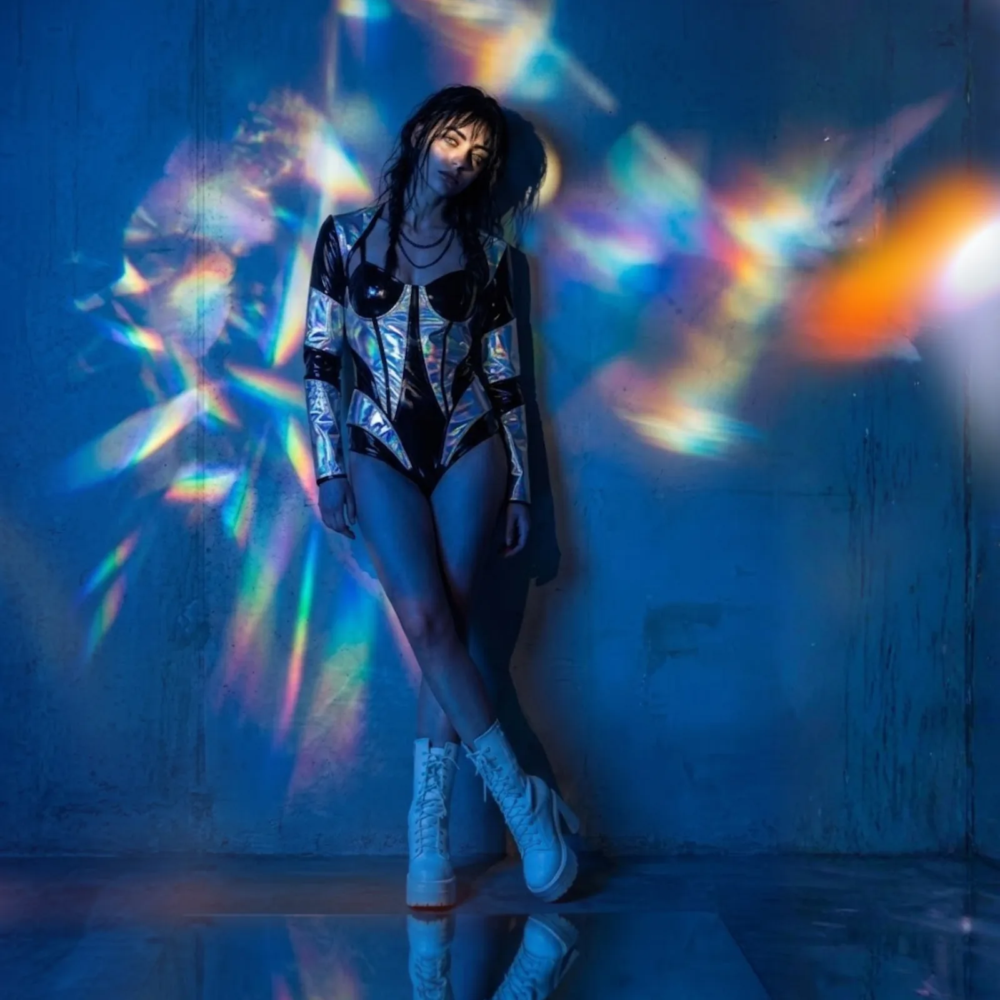

Rituais investiga o que repetimos até deixar de perceber: fé, disciplina, desejo, medo e controle. Dos deuses antigos aos sistemas que criamos para ordenar a vida, quatorze faixas sobre as formas de obediência que aprendemos a chamar de escolha.
Rituais é o primeiro álbum da AMORFA que deixa de orbitar diretamente Onde se guarda o que não existe mais. O foco muda do arquivo íntimo para sistemas que disciplinam desejo, corpo, fé, tecnologia e pertencimento.
O encarte reúne fotografia, comentários sobre as faixas e textos de R. J. Wulf sobre feminismo, ateísmo, panteísmo científico e a atração humana por altares — inclusive os que não chamamos de religião.
Ler o encarte completo →

Dois lançamentos independentes no mesmo dia. Não é um álbum duplo — são duas obras, cada uma com sua direção visual e seu encarte.

Artificial, elétrico, em movimento — a noite iluminada.
Pré-salvar ↗
Visceral, pesado, interior — 14 faixas, 59 minutos.
Smartlink em breveUma porta de entrada para o catálogo — lançamentos, faixas essenciais e o percurso mais recente do projeto.
Abrir no Spotify ↗
Pop eletrônico sombrio e música alternativa. Composição, direção visual e experimentação sonora — construído inteiramente com ferramentas de IA generativa, curadoria e método.
Sobre a AMORFA →